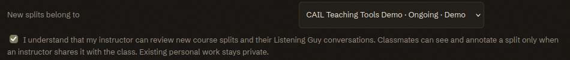
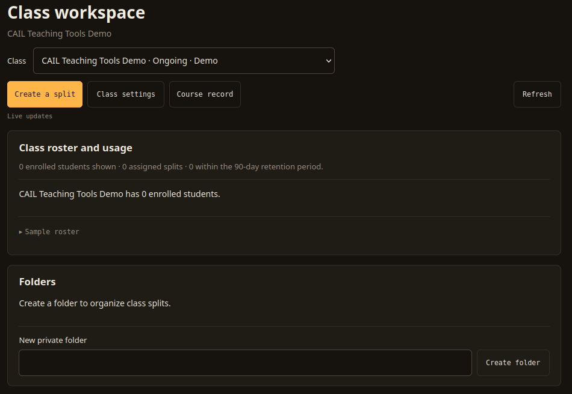

Class Workspace
The Class Workspace brings together a course's assigned recordings and shared folders. Instructors can also review the roster and read Listening Guy conversations attached to course work.
Assigning Work to a Course

On the Splitter tab, choose a course under Share with. The selector starts at Personal. Before assigning new work to a course, check the acknowledgment that your instructor can review those splits and their Listening Guy conversations. Classmates gain access when an instructor shares a course folder with them.
After you check the acknowledgment, each new split belongs to the selected course. Changing the course clears the checkbox. The selector starts at Personal even when you arrive through an instructor's ?course= link, so choose the course and acknowledge the policy before creating course work. Existing personal work stays personal.
The Workspace Tab

Use the Class selector to switch between courses you belong to or teach. Create a split returns to the Splitter, where Share with starts at Personal. Select the course and check its acknowledgment for new course work. Instructors can open Class settings to change course options, such as shared stem labels, or Course record to review assigned splits that remain within the retention period.
The workspace updates while you keep it open. Refresh reloads the roster and folders when you need to check a recent change.
Roster and Usage
Instructors see every enrolled student in the roster, including students who have no splits. Each row shows the student's assigned splits, statuses, dates, and a link to read their Listening Guy conversation. Counts cover the roster entries currently loaded, so load further pages before treating a count as the course total. A student who has not opened the app appears with App usage pending.
The Lab's admission records determine enrollment. The app checks membership on every protected request. A student who withdraws loses course access, and a copied folder link cannot grant access on its own.
Folders and Sharing
Instructors create folders in the Folders card and use + Folder on a course split in the rack to add it. A folder starts with Instructors only access and accepts only splits assigned to its course.
An instructor chooses a folder permission and presses Save sharing. Instructors only keeps the folder available to the course's instructors. Class: listen and read notes lets current class members play the stems and read existing notes. Choose Class: listen and add notes when students need to annotate a shared recording.
Share the folder link or direct students to Class Folders on the Splitter tab. Each viewer must currently belong to the course. The folder exposes only the splits inside it; original uploads and Listening Guy conversations stay outside the shared view. Revoking sharing hides the folder at once. An expired split remains as a placeholder, and the folder does not extend its retention.
Reviewing Conversations
Instructors can open a student's course split and Listening Guy sessions from the roster. The review view lets you read the conversation without generating an answer or spending a turn. It also prevents edits and forwarding. Personal splits and conversations from before the student acknowledged the course policy stay private.